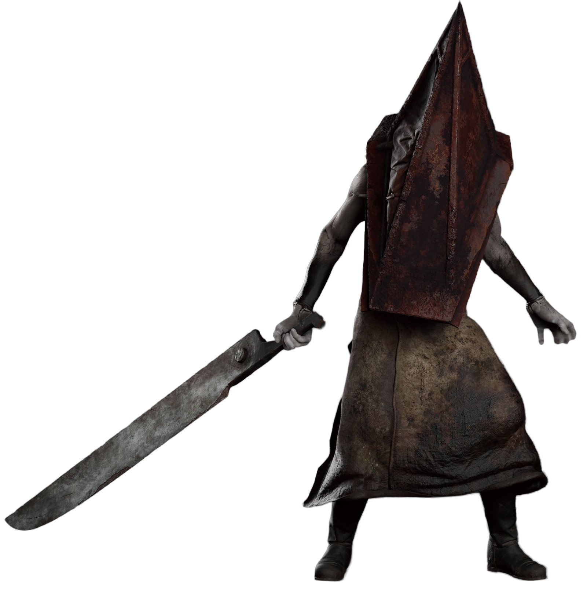
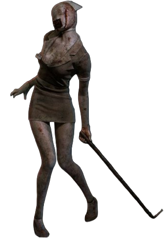

|

|
Silent Hill 2 (2001) is a psychological/survival horror video game developed by Konami, or more specifically Team Silent. Development of the game started in 1999 following the release of Silent Hill (1999). While the original Silent Hill was developed for the Playstation, Silent Hill 2 was developed for the Playstation 2 and Xbox. The upgraded hardware allowed them to improve the fog and shadow effects of the first game. The game uses said fog to work around the small render distance by hiding the edges for a more seamless transition as you move. It also enhances the horror feel of the game by making you feel claustrophobic and frightened of what might be beyond the fog. Silent Hill 2 is also implemented with a grain filter to help the town in which the game takes place look dirtier and more abandoned. Team Silent used the newer hardware as well to update the sound of the first game. In both video games, a radio’s static grows louder as enemies get closer to you to instill a sense of fear into the player. In Silent Hill 2, however, sounds of higher and lower frequencies that aren’t able to be heard by humans are added to deepen that sense of fear. They also utilized 3D sound, so if a monster is approaching behind you, you can physically hear it behind you. For the animations of the characters, they used a lot of motion capture except for facial animations. The team wanted the facial expressions to feel human rather than be computer generated so they did it all by rigging the motions by hand.
Silent Hill 2 has had a lasting impact on the survival horror genre for the past 24 years. The reason for this is the game’s emphasis on psychological horror, atmospheric storytelling, creepy and unsettling visuals and sounds, and difficult gameplay. It created a highly immersive experience that left a lasting effect on all its players. Silent Hill 2 explores a variety of deep topics and themes such as the effect of being chronically ill on a person’s mental fortitude, sexual abuse, bullying to the point of torment and deep mental scars, and the repression of guilt. The way it utilizes these themes shows that emotional horror is equally as powerful as your typical jump scare and gore horror, which then inspired many others to start utilizing similar story-building to improve their own horror games. The game also has iconic characters and enemies that have stuck with people for decades. Many people who haven’t played Silent Hill 2 still know the main antagonist, Pyramid Head (see left). His giant red pyramid head, intimidatingly large knife, and muscular build are easily identifiable and unique. Another recognizable enemy are the Bubble Head Nurses (see right.) Their grotesque posture and movement, provocative uniform, and monstrous masks are easy to spot by anyone.
Silent Hill 2, along with Silent Hill 3 (2003), was remastered and re-released as part of the Silent Hill HD Collection (2012) for Playstation 3 and Xbox 360. The original source code for Silent Hill 2 had not been preserved, so the new development team had to work with the incomplete code provided by Konami. The team was then dealing with problems from porting the game to a newer console and issues that had already been fixed by the original development team, where the solutions weren’t present in the incomplete code. In the remaster, the new team also cleared up textures, such as scratches on the walls and clues to puzzles, which weren’t easily visible in the original. One comedic problem that arose from the incomplete code is the iconic “Silent Hill Ranch” sign’s font being replaced with comic sans. The 2024 remake of Silent Hill 2 by Bloober, which brings back the original font for the sign, pokes fun at this error by having the comic sans version of the “Silent Hill Ranch” sign present in the ranch but only viewable by using a free-camera mod.
|

|